Johnny Cash
Sun Record Company Singles
1955-1957-
1955
-
221
Cry! Cry! Cry!
June 21, 1955
Flip Side: Hey Porter!


-
232
So Doggone Lonesome
December 15, 1955
Flip Side: Folsom Prison Blues
 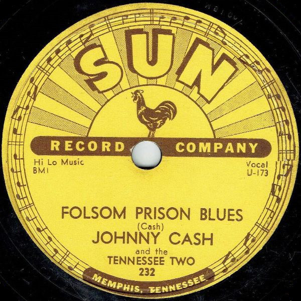
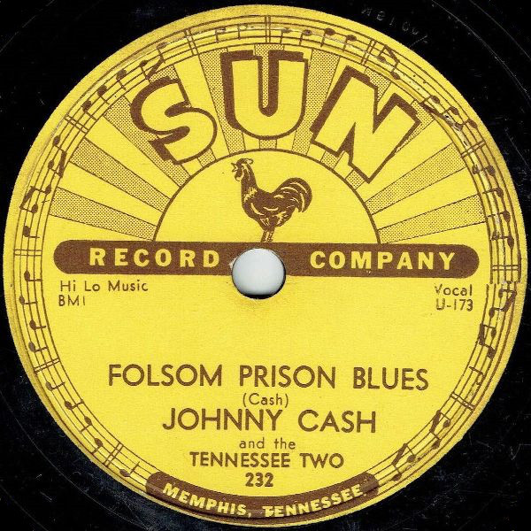 -
1956
-
241
I Walk The Line
May 1, 1956
Flip Side: Get Rhythm
 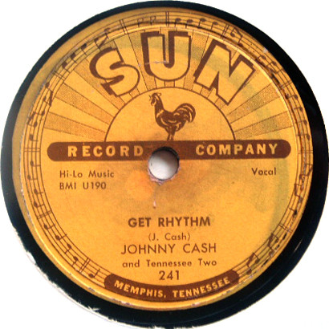
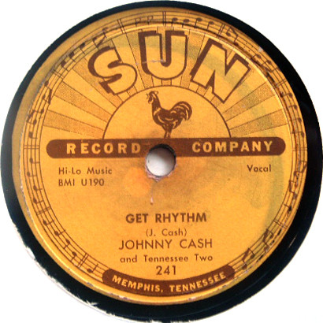 -
258
There You Go
November 21, 1956
Flip Side: Train Of Love
 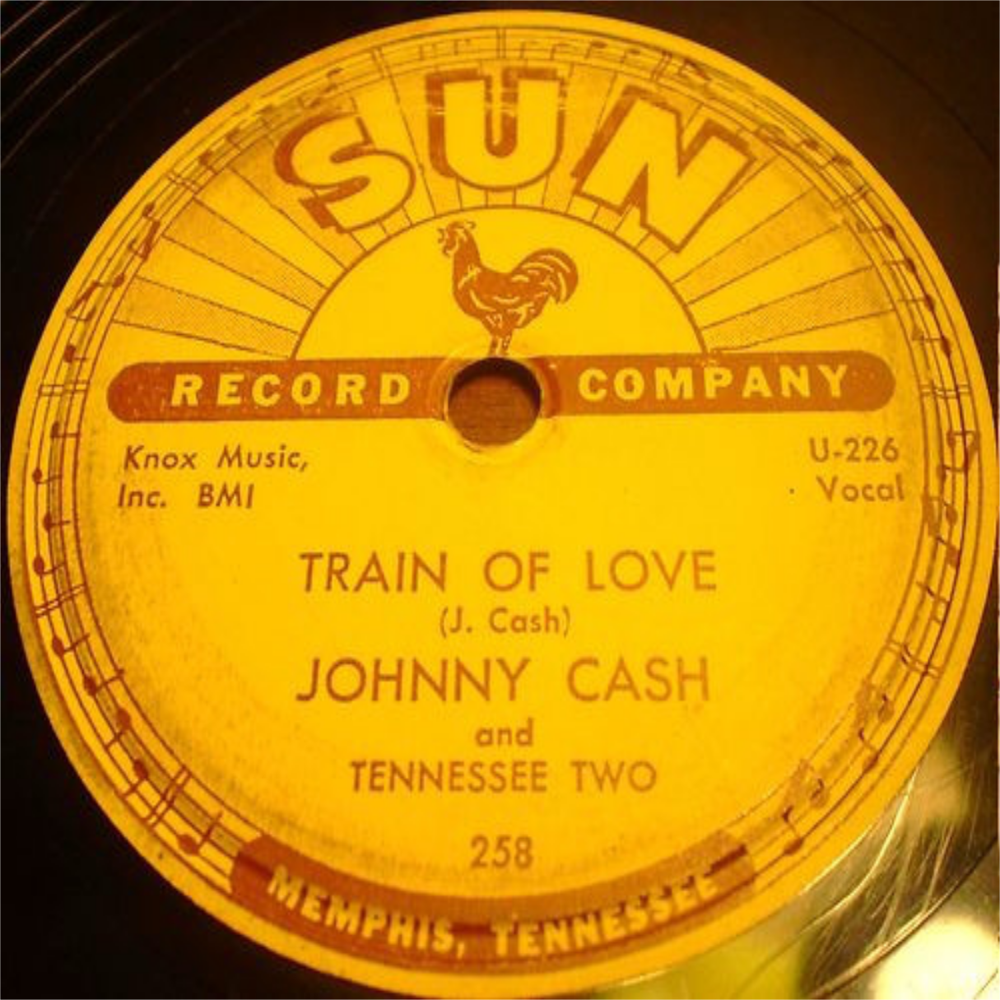
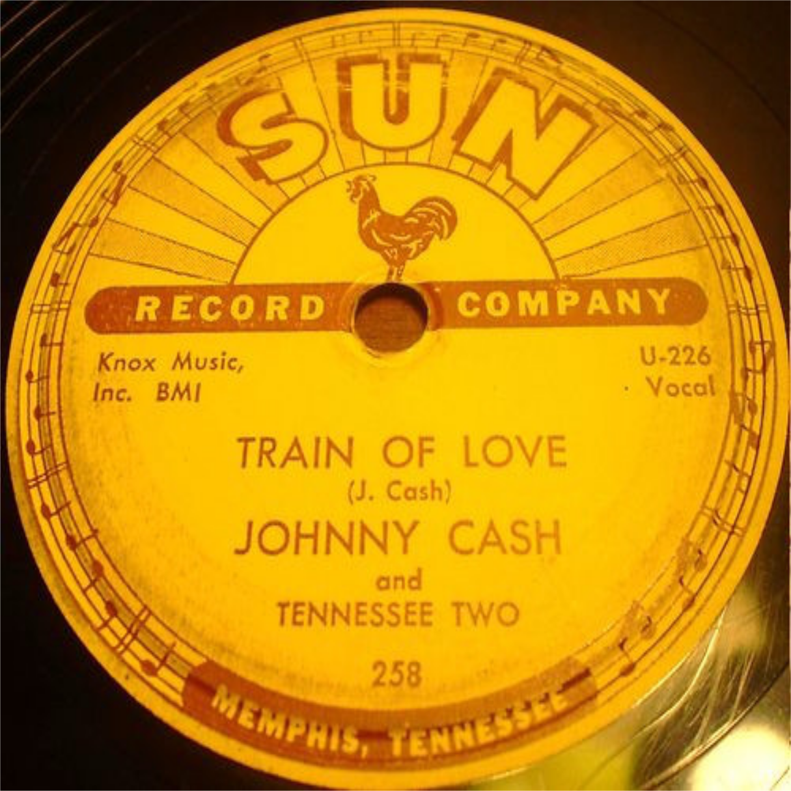 -
1957
-
266
Next In Line
April 15, 1957
Flip Side: Don't Make Me Go
 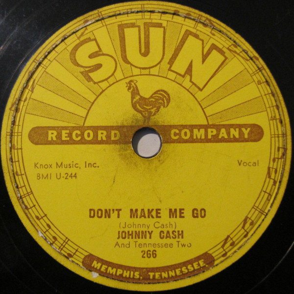
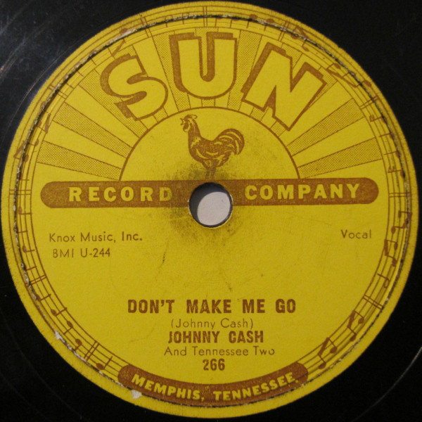 -
279
Home of the Blues
August 10, 1957
Flip Side: Give My Love To Rose
 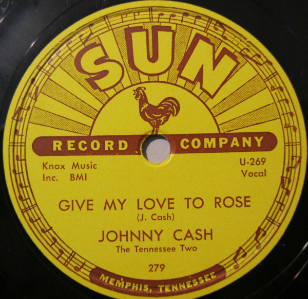
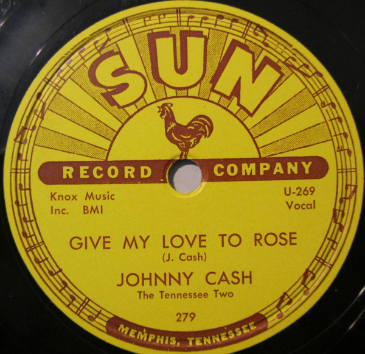 -
283
Ballad of a Teenage Queen
December 1, 1947
Flip Side: Big River
 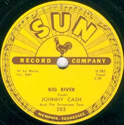
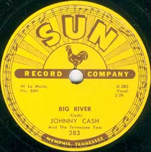